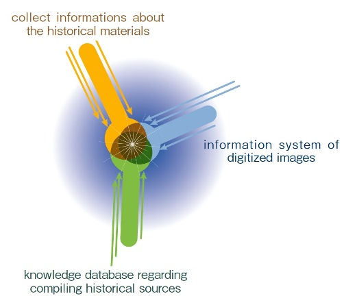

In 1984, the Historiographical Institute innovated historical information database system, and in 1997 made it available online. The system has become an indispensable source of scholarly information for those studying on the history of Japan.
The International Center for the Digitization of Pre-modern Japanese Sources (CDPS), established in 2006, functions as a core unit for historical information research within the Institute. The Center has adopted achievements and methods from the field of informatics. From 2009 onwards, the Center has also been providing support for activities relating to the Institute’s role as a joint base for scholars from all over Japan.
The goal of the CDPS is to make use of computing and networking technology to build an effective structure for process of accessing historical materials, developing them as research resources, and ensuring their incorporation into the cultural fabric of society in the form of historical knowledge; to this end, the Center has three sections.
a) Annotation and revision of existing databases; systematization, standardization and multilingual support for both data and systems.
b) The digital photographing and the digitization of existing historic photographs (working from microfilm, and in some cases from glass plates)
c) Transformation of historical document collections into knowledge that allows the fruits of historical research to be shared throughout academia and society.
The head of the Center or the Institute’s Director supervises the staff. The CDPS committee is chaired by the Institute’s Chief Information Officer. The Information Support Group for the Institute’s staff is affiliated with the Center.
